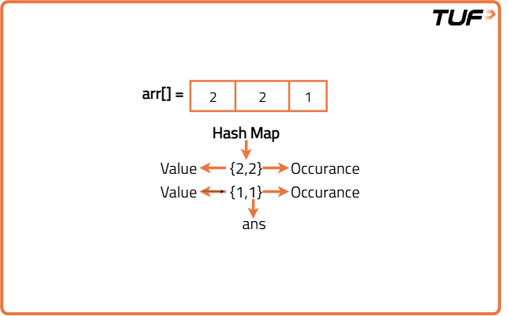
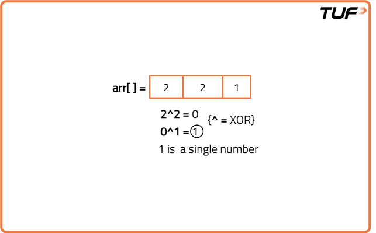

Find the number that appears once, and the other numbers twice
Problem Statement: Given a non-empty array of integers arr, every element appears twice except for one. Find that single one.
Examples
Example 1:
Input Format: arr[] = {2,2,1}
Result: 1
Explanation: In this array, only the element 1 appear once and so it is the answer.
Example 2:
Input Format: arr[] = {4,1,2,1,2}
Result: 4
Explanation: In this array, only element 4 appear once and the other elements appear twice. So, 4 is the answer.
Disclaimer: Here is the practice link to help you assess your knowledge better. It's highly recommend trying to solve it before looking at the solution.
Brute Force
Algorithm
Intuition
For every element present in the array, we will do a linear search and count the occurrence. If for any element, the occurrence is 1, we will return it.Approach
- First, we will run a loop to select the elements of the array one by one.
- For every element of the array, we will perform a linear search using another loop and count its occurrence.
- If for any element the occurrence is 1, we will return it.
Code
#include <bits/stdc++.h>
using namespace std;
class Solution {
public:
// Function to find the single non-repeating element using brute force
int getSingleElement(vector<int>& arr) {
int n = arr.size();
// Loop through every element
for (int i = 0; i < n; i++) {
int num = arr[i]; // current element to check
int cnt = 0;
// Count occurrences of this element
for (int j = 0; j < n; j++) {
if (arr[j] == num)
cnt++;
}
// If it occurs only once, return it
if (cnt == 1) return num;
}
// This line should never be reached
return -1;
}
};
int main() {
vector<int> arr = {4, 1, 2, 1, 2};
Solution obj;
int ans = obj.getSingleElement(arr);
cout << "The single element is: " << ans << endl;
return 0;
}
Complexity Analysis
Time Complexity: O(N*N), since nested for loops are used
Space Complexity: O(1). No extra space used
Better Approach
Algorithm
Intuition
In the previous approach, we were finding the occurrence of an element using linear search. We can optimize this using hashing technique. We can simply hash the elements along with their occurrences in the form of (key, value) pair. Thus, we can reduce the cost of finding the occurrence and hence the time complexity. Now, hashing can be done in two different ways and they are the following:Approach
- First, we will find the maximum element(say maxElement) to know the size of the hash array.
- Then we will declare a hash array of size maxElement+1.
- Now, using another loop we will store the elements of the array along with their frequency in the hash array.
- After that, using another loop we will iterate over the hash array, and try to find the element for which the frequency is 1, and finally, we will return that particular element.
- While searching for the answer finally, we can either use a loop from 0 to n(i.e. Size of the array) or use a loop from 0 to maxElement. So, the time complexity will change accordingly

Code
#include <bits/stdc++.h>
using namespace std;
class Solution {
public:
// Function to find the single non-repeating element using a hash array
int getSingleElement(vector<int>& arr) {
int n = arr.size();
// Step 1: Find the maximum value in the array
int maxi = arr[0];
for (int i = 0; i < n; i++) {
maxi = max(maxi, arr[i]);
}
// Step 2: Declare and initialize hash array of size maxi+1
vector<int> hash(maxi + 1, 0);
// Step 3: Count the frequency of each number
for (int i = 0; i < n; i++) {
hash[arr[i]]++;
}
// Step 4: Find the element that occurs exactly once
for (int i = 0; i < n; i++) {
if (hash[arr[i]] == 1)
return arr[i];
}
return -1; // fallback, shouldn't occur in valid input
}
};
int main() {
vector<int> arr = {4, 1, 2, 1, 2};
Solution obj;
int ans = obj.getSingleElement(arr);
cout << "The single element is: " << ans << endl;
return 0;
}
Complexity Analysis
Time Complexity: O(N)+O(N)+O(N), where N = size of the array. One O(N) is for finding the maximum, the second one is to hash the elements and the third one is to search the single element in the array.
Space Complexity: O(maxElement+1) where maxElement = the maximum element of the array.
Optimised Approach
Algorithm
Intuition
Two important properties of XOR are the following:Approach

Code
#include <bits/stdc++.h>
using namespace std;
class Solution {
public:
// Function to find the single non-repeating element using XOR
int getSingleElement(vector<int>& arr) {
int n = arr.size();
int xorr = 0;
// XOR all elements. Duplicates cancel out, leaving the single element.
for (int i = 0; i < n; i++) {
xorr = xorr ^ arr[i];
}
return xorr;
}
};
int main() {
vector<int> arr = {4, 1, 2, 1, 2};
Solution obj;
int ans = obj.getSingleElement(arr);
cout << "The single element is: " << ans << endl;
return 0;
}
Complexity Analysis
Time Complexity: O(N). Where N is the size of the array
Space Complexity: O(1). No extra space used